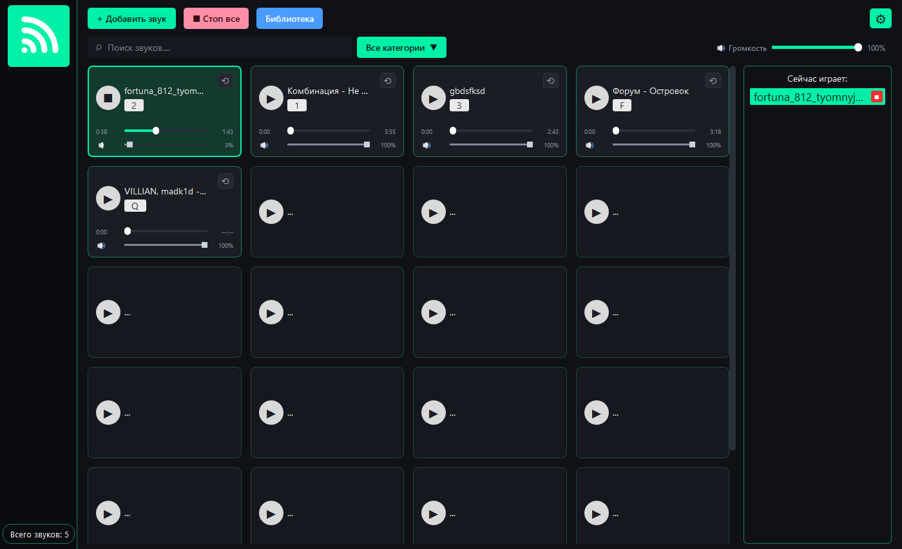
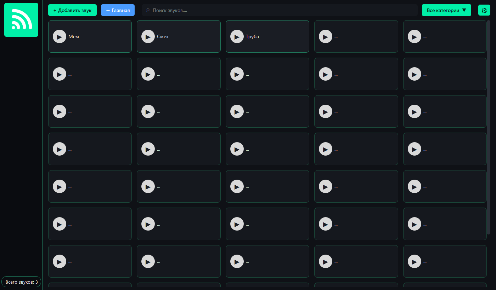
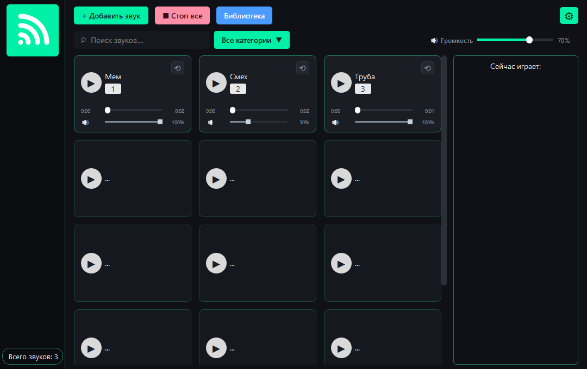

Функциональность
Главный экран
Главный экран представляет собой сетку карточек звуков. Число колонок зависит от ширины окна: 3 колонки на узком экране, 4 — на широком. Сетка продолжается вниз, поэтому колесо мыши прокручивает список, даже если звуков немного.


На каждой карточке:
название звука и назначенная клавиша;
кнопка запуска/остановки;
полоса перемотки с текущим и полным временем;
кнопка зацикливания ⟲;
регулятор громкости звука;
контекстное меню по правой кнопке.
В верхней панели расположены «Добавить звук», «Стоп все», «Библиотека», поиск, фильтр категорий, общая громкость и кнопка настроек.
Воспроизведение
запуск и остановка кликом по карточке;
запуск по горячей клавише (в окне и глобально);
одновременное воспроизведение до 16 звуков;
мгновенная остановка всех звуков кнопкой «Стоп все» или клавишей Esc;
подсветка активной карточки и панель «Сейчас играет».
Перемотка
Полоса перемотки позволяет:
перемотать звук кликом в нужное место;
перетащить ползунок во время воспроизведения;
начать воспроизведение с выбранной позиции, если звук ещё не играет.
Перемотка реализована без внешних библиотек: из PCM-данных звука вырезается фрагмент с нужного смещения, который проигрывается как самостоятельный звук. Поэтому перемотка работает и для MP3, и для WAV/OGG.
Зацикливание
Кнопка ⟲ включает повтор. Важные особенности:
включение цикла во время воспроизведения не перезапускает звук и не сдвигает позицию;
трек доигрывает до конца и начинается сначала — без «прыжка назад» к месту включения;
цикл, включённый заранее, сразу играет бесшовно с начала;
выключение цикла даёт текущему проходу доиграть и останавливает звук в конце.
Громкость
громкость каждой карточки — отдельный регулятор (0–100 %);
общая громкость — в верхней панели, синхронизирована с настройками;
изменения сохраняются в JSON; громкость применяется сразу.
Библиотека
Экран «Библиотека» открывается кнопкой в верхней панели. Здесь карточки показаны без регуляторов — экран предназначен для управления коллекцией: поиск, фильтр категорий, добавление и удаление звуков. Число колонок адаптируется под ширину окна (3–5).


Поиск и категории
поиск фильтрует карточки по названию в реальном времени;
категории задаются при добавлении звука;
фильтр «Все категории» показывает только выбранную категорию.
Горячие клавиши
Клавиша |
Действие |
|---|---|
назначенные пользователем |
запуск/остановка соответствующего звука |
|
остановить все звуки (режим паники) |
|
очистить клавишу в диалоге назначения |
Глобальные клавиши работают, когда окно программы неактивно, если включён
соответствующий флажок в настройках и установлен pynput. Перехват
работает при неактивном окне программы.
Форматы и ограничения
поддерживаемые форматы: WAV, OGG, MP3;
число одновременно воспроизводимых звуков — до 16;
задержка запуска — не более 100 мс;
рекомендуемая библиотека — от 20 звуков без деградации;
хранение — локальный JSON, без сети и персональных данных.

